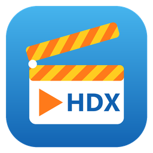

HDX Video Edit
Montare i video con lo screen reader: tagliare, unire, aggiungere musica, transizioni, effetti e scritte, ed esportare il video finito, tutto con la tastiera.
HDX Video Edit è un editor video pensato per chi usa lo screen reader. Le clip, video e foto, stanno in un elenco: le ascolti, ti fermi nel punto giusto e tagli, dividi, unisci, sposti, con Annulla sempre a disposizione. Si comanda tutto con la tastiera, e lo screen reader ti dice sempre dove sei, in quale clip e a che tempo, e cosa hai appena cambiato. In alto il video si vede grande, per chi ti assiste o guarda il lavoro.
Poi lo rifinisci: transizioni tra le clip, effetti audio per pulire e migliorare il suono, effetti video per la luce, i colori e l'inquadratura, scritte e titoli, il tuo logo, volti e targhe da sfocare, e la musica di sottofondo solo sotto le clip che vuoi, con il volume di ogni clip sotto controllo. Puoi segnare un tratto e ascoltarlo in loop, cambiare la velocità di una clip tenendo il tono della voce, e preparare i capitoli per YouTube. E se il video è per uno Short, Adatta allo schermo lo porta in verticale senza calcoli.
Quando hai finito, esporti il video in MP4 o solo l'audio, anche di una clip sola o di un tratto. E se vuoi sapere cosa c'è nell'immagine, l'intelligenza artificiale, con la tua chiave Gemini o OpenAI, te la descrive, trova volti e targhe da nascondere e risponde alle tue domande su come si usa il programma.
Versione 1.0.1 del 17 novembre 2026. Gratuito, per Windows 10 e 11. Il link porta sempre all'ultima versione.
L'angolo di HDX
Il gruppo Telegram di tutti i miei programmi e delle mie add-on: novità, domande, segnalazioni e suggerimenti, insieme agli altri utenti.
Cosa serve
- Windows 10 o 11 a 64 bit.
- Uno screen reader: HDX Video Edit parla con NVDA e con JAWS anche quando non è in primo piano.
- Per l'intelligenza artificiale: una chiave di Gemini (anche gratuita) o di OpenAI.
Cosa fa
- Il montaggio in un elenco: video e foto da tagliare nel punto in cui ascolti, dividere, unire, spostare, rinominare e sostituire, con Annulla e Ripeti.
- Spazio ascolta e torna al punto di partenza, Ctrl+Spazio riproduce e mette in pausa, le frecce si spostano nel tempo; ogni movimento e ogni modifica vengono annunciati.
- La velocità delle clip, da 0,25 a 2 volte, tenendo il tono della voce oppure cambiandolo come un nastro.
- Il tratto con i segni di inizio e fine, il loop per riascoltarlo, e Esporta, Togli o Tieni solo il tratto.
- 69 transizioni tra le clip, più aperture e chiusure dal nero, dal bianco o da un colore.
- Gli effetti audio: equalizzatori, compressore, limitatore, riduzione del rumore, livellatore della voce, riverbero, delay e molti altri, con le catene pronte per concerti, voce e YouTube.
- Gli effetti video: luce e colore, nitidezza, zoom, ritaglio e rotazione, scritte e titoli che si muovono, il logo, e volti e targhe da sfocare, trovati anche con l'intelligenza artificiale.
- Gli Shorts e i video del telefono: Adatta allo schermo riempie lo schermo, mette lo sfondo sfocato, scorre lentamente o segue il soggetto con l'intelligenza artificiale, senza calcoli.
- Partenza e frenata come un disco: la clip parte da ferma o rallenta fino a fermarsi, con il tono che sale e scende come un giradischi.
- Misura la clip e il montaggio: il volume, il picco, il timbro, la luce, i colori e la nitidezza, in numeri e parole, con i consigli. E Uguaglia il suono porta tutte le clip, o solo una, allo stesso volume e a un timbro simile.
- I Consigli sul progetto: l'intelligenza artificiale guarda le clip, legge le misure e ti dice cosa migliorare e come.
- La musica di sottofondo sotto le clip che scegli, con le dissolvenze, e per ogni clip il volume del suo audio e dei sottofondi.
- L'esportazione in MP4 (H.264, H.265, AV1) o solo audio (MP3, WAV, FLAC), anche di una clip sola o del tratto.
- I capitoli per YouTube, pronti da incollare nella descrizione, con il controllo delle regole di YouTube.
- L'intelligenza artificiale che descrive l'immagine e risponde alle domande sul programma leggendo la guida.
- Annunci a voce o con suoni riconoscibili, scorciatoie tutte modificabili, avvio con Windows e area di notifica, salvataggio automatico, e aggiornamenti automatici, in italiano, inglese e spagnolo.
Guida e novità
- La guida di HDX Video Edit, da leggere online
- Le novità di ogni versione
- Tutte le versioni su GitHub
Sostieni il progetto
I miei programmi sono gratuiti e li porto avanti da solo, nel tempo libero. Se ti sono utili, puoi aiutarmi con una donazione.
Hai domande o suggerimenti? Scrivimi.